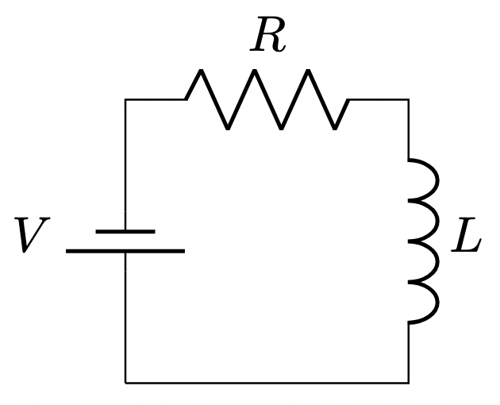
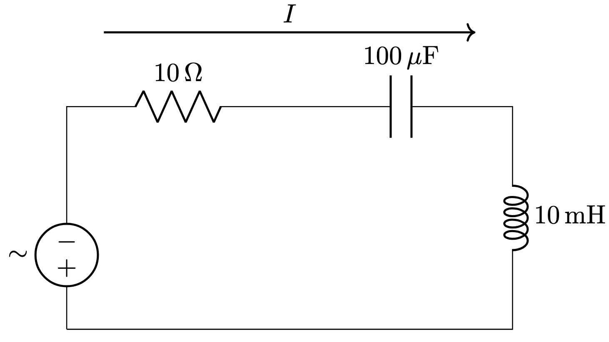

Generating Circuit Diagrams With LaTeX and CircuiTikZ
The CircuiTikZ is a LaTeX extension package which provides a set of macros for typesetting electrical and electronic networks. You simply specify a component type, a grid placement and some connections and CircuiTikZ will transform this into a high-quality circuit diagram.
CircuiTikZ was originally created by Massimo Redaelli to create and exercise book and exams sheets for his courses at where he was an instructor. He wanted a tool that was easy to use, with a lean syntax, native to LaTeX, and supporting directly PDF output format. Like LaTeX, CircuiTikZ is a GNU licensed library although there are also commercial offerings that allow for web based interactive rendering. One example is the Overleaf.com website.
TikZ Vector-Based Drawing Within LaTeX
TikZ is a powerful graphics package for creating vector-based illustrations directly within LaTeX documents. The name "TikZ" is a recursive acronym: "TikZ ist kein Zeichenprogramm," which is German for "TikZ is not a drawing program." TikZ provides a syntax for specifying graphics in a programmatic way, allowing for the creation of complex diagrams, plots, and figures that integrate seamlessly with LaTeX's typesetting.
What is the TikZ Syntax? The TikZ syntax consists of a set of LaTeX commands and environments that describe how to draw various shapes, lines, and other graphical elements. The basic structure involves the \begin{tikzpicture} and \end{tikzpicture} environment, within which you can place TikZ commands to create graphics.
Here's a simple example:
https://www.overleaf.com/learn/latex/TikZ_package
Basic Format

1 2 3 4 5 6 7 8 9 10 | |
Basic Resistor Circuit

1 2 3 4 5 6 7 8 9 10 11 12 13 14 15 16 17 18 19 | |
RLC Example
You are an expert at generating high-quality circuit diagrams using the LaTeX CircuiTikZ
library. For the following circuit, generate the corresponding circuit diagram using LaTeX CircuiTikZ format:
Create a diagram of a simple RLC circuit with all components in series.
Place an AC power signal on the left side.
Place the components on the top and right side.
Place a 10 ohm resistor,
a 100 microfarad capacitor,
and a 10 millihenry inductor in series in the circuit.
Label all the components with their values.
Create an arrow that shows the direction of the current.

1 2 3 4 5 6 7 8 9 10 11 12 13 14 | |
Complex Example
1 | |